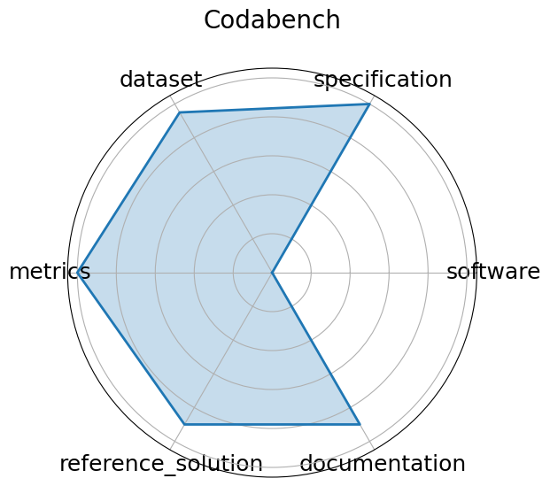

Date: 2022-01-01
Name: Codabench
Domain: General ML; Multiple
Focus: Open-source platform for organizing reproducible AI benchmarks and competitions
Keywords: benchmark platform, code submission, competitions, meta-benchmark
Task Types: Multiple
Metrics: Submission count, Leaderboard ranking, Task-specific metrics
Models: Arbitrary code submissions
Citation:
Zhen Xu, Sergio Escalera, Adrien Pavão, Magali Richard, Wei-Wei Tu, Quanming Yao, Huan Zhao, and Isabelle Guyon. Codabench: flexible, easy-to-use, and reproducible meta-benchmark platform. Patterns, 3(7):100543, July 2022. URL: http://dx.doi.org/10.1016/j.patter.2022.100543, doi:10.1016/j.patter.2022.100543.
bibtex: ``` @article{xu-2022,
author = {Xu, Zhen and Escalera, Sergio and Pavão, Adrien and Richard, Magali and Tu, Wei-Wei and Yao, Quanming and Zhao, Huan and Guyon, Isabelle},
doi = {10.1016/j.patter.2022.100543},
issn = {2666-3899},
journal = {Patterns},
month = jul,
number = {7},
pages = {100543},
publisher = {Elsevier BV},
title = {Codabench: Flexible, easy-to-use, and reproducible meta-benchmark platform},
url = {http://dx.doi.org/10.1016/j.patter.2022.100543},
volume = {3},
year = {2022}}
```
Ratings:
Software:
Rating: 1
Reason: This is a platform for posting benchmarks, not a benchmark in itself.
Specification:
Rating: 1
Reason: This is a platform for posting benchmarks, not a benchmark in itself.
Dataset:
Rating: 1
Reason: This is a platform for posting benchmarks, not a benchmark in itself.
Metrics:
Rating: 1
Reason: This is a platform for posting benchmarks, not a benchmark in itself.
Reference Solution:
Rating: 1
Reason: This is a platform for posting benchmarks, not a benchmark in itself.
Documentation:
Rating: 1
Reason: This is a platform for posting benchmarks, not a benchmark in itself.
Average Rating: 1.0
Radar Plot: 